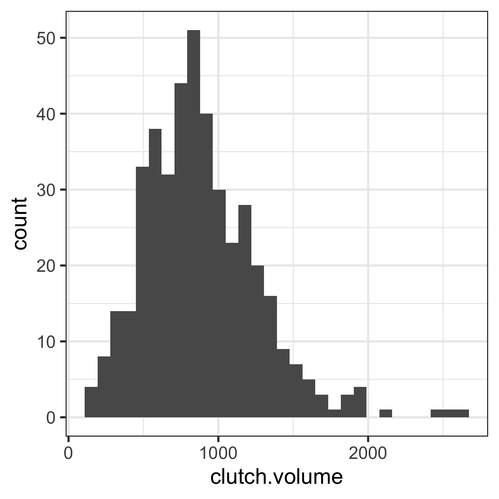
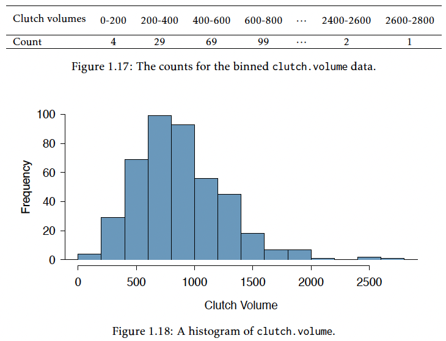
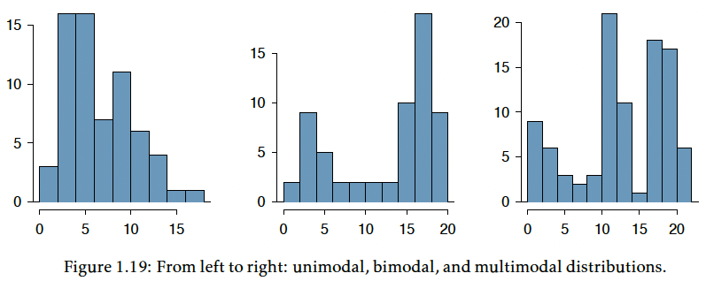
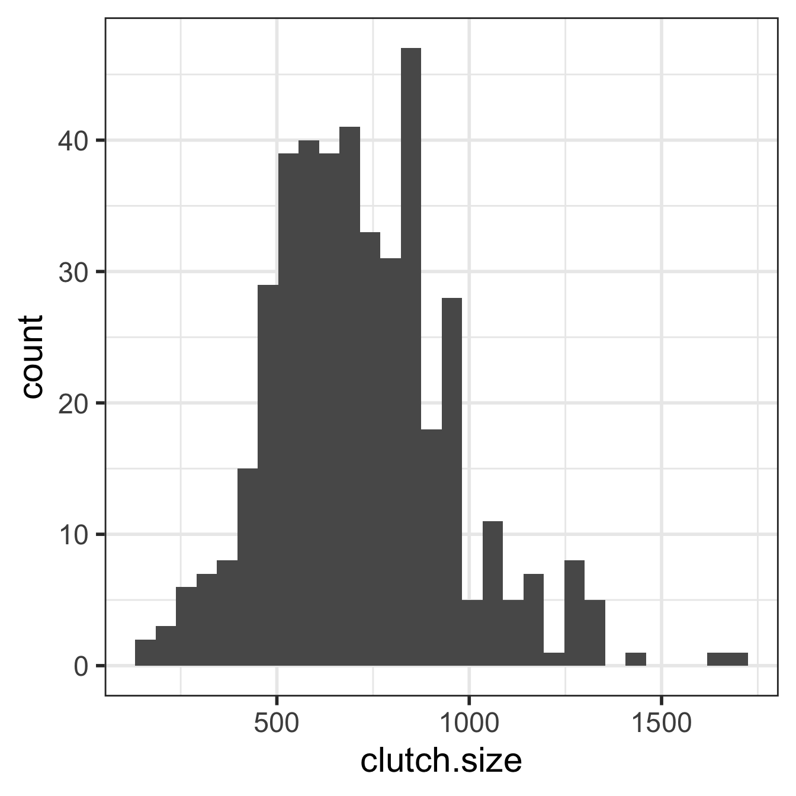
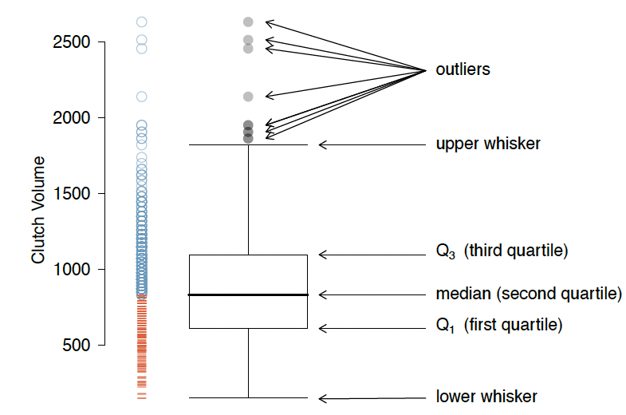
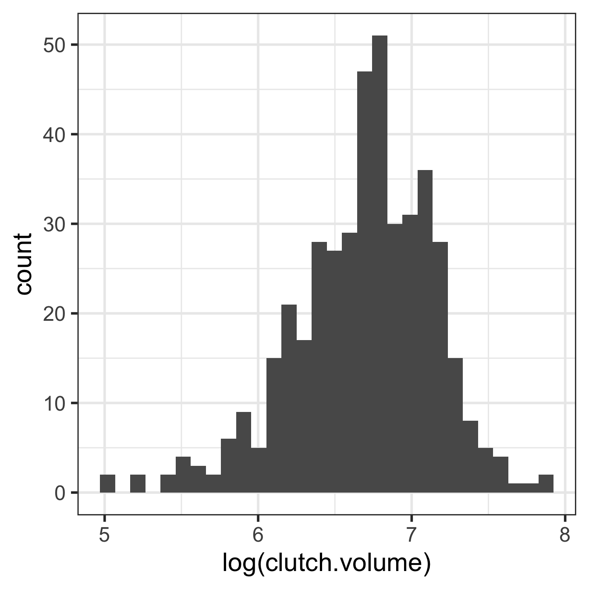
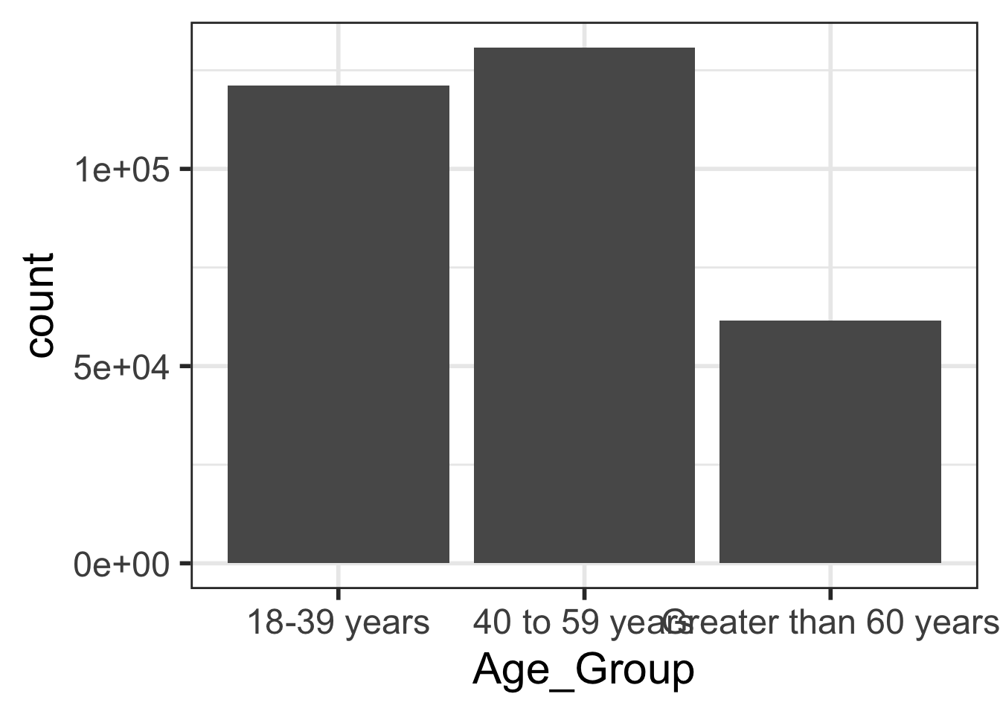
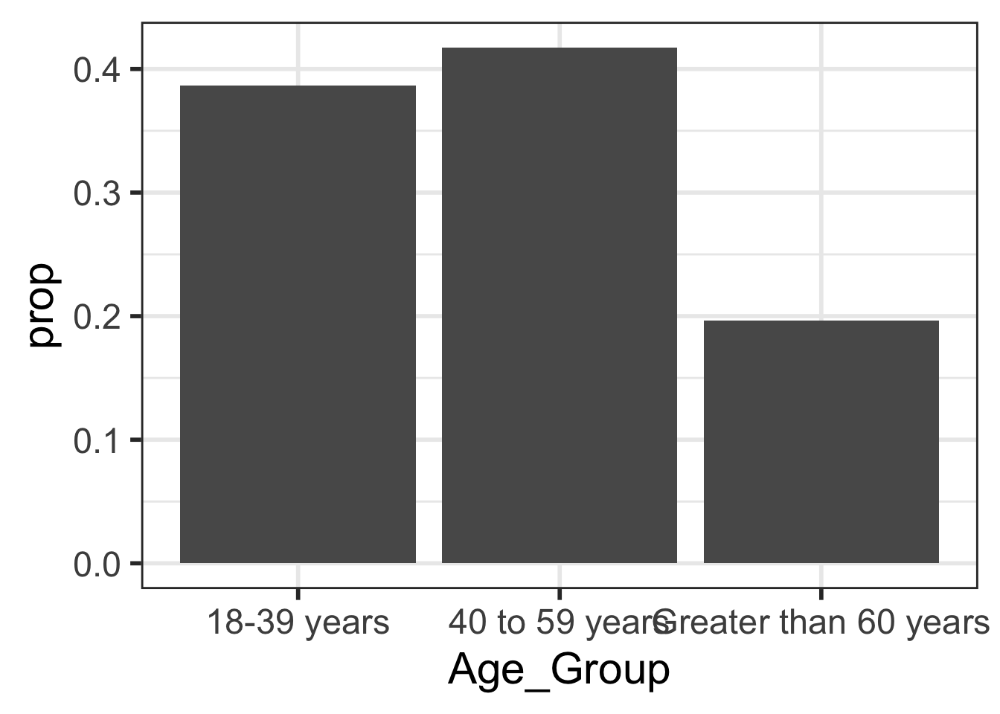

ggplot(data = frog,
aes(x = clutch.volume)) +
geom_histogram() 
Visualize distributions of numeric data/variables using histograms and boxplots
Recognize when transforming data helps make asymmetric data more symmetric (log values)
Visualize distributions of categorical data/variables using frequency tables and barplots

![A cartoon of a fuzzy round monster face showing 10 different emotions experienced during the process of debugging code. The progression goes from (1) “I got this” - looking determined and optimistic; (2) “Huh. Really thought that was it.” - looking a bit baffled; (3) “...” - looking up at the ceiling in thought; (4) “Fine. Restarting.” - looking a bit annoyed; (5) “OH WTF.” Looking very frazzled and frustrated; (6) “Zombie meltdown.” - looking like a full meltdown; (7) (blank) - sleeping; (8) “A NEW HOPE!” - a happy looking monster with a lightbulb above; (9) “insert awesome theme song” - looking determined and typing away; (10) “I love coding” - arms raised in victory with a big smile, with confetti falling.](../img_slides/debugging.png)
Makes data easier to understand
Helps identify patterns
Reveals data features
Helps with decision-making
In evolutionary biology, parental investment refers to the amount of time, energy, or other resources devoted towards raising offspring.
We will be working with the frog dataset, which originates from a 2013 study3 about maternal investment in a frog species. Reproduction is a costly process for female frogs, necessitating a trade-off between individual egg size and total number of eggs produced.
Researchers were interested in investigating how maternal investment varies with altitude. They collected measurements on egg clutches found at breeding ponds across 11 study sites; for 5 sites, the body size of individual female frogs was also recorded.
| altitude | latitude | egg.size | clutch.size | clutch.volume | body.size | |
|---|---|---|---|---|---|---|
| 1 | 3,462.00 | 34.82 | 1.95 | 181.97 | 177.83 | 3.63 |
| 2 | 3,462.00 | 34.82 | 1.95 | 269.15 | 257.04 | 3.63 |
| 3 | 3,462.00 | 34.82 | 1.95 | 158.49 | 151.36 | 3.72 |
| 150 | 2,597.00 | 34.05 | 2.24 | 537.03 | 776.25 | NA |
NA means the measured value for body size in clutch #150 is missing
Recognize when transforming data helps make asymmetric data more symmetric (log values)
Visualize distributions of categorical data/variables using frequency tables and barplots


We can make a histogram of clutch volume or clutch size:
ggplot(data = frog,
aes(x = clutch.volume)) +
geom_histogram() 
ggplot(data = frog,
aes(x = clutch.size)) +
geom_histogram() 

When working with strongly skewed data, it can be useful to apply a transformation
Common to use the natural log transformation on skewed data
We typically just call this the “log transformation”
Especially for variables with many values clustered near 0 and other observations that are positive
Transformations are mostly used when we make certain assumptions about the distribution of our data
ggplot(data = frog,
aes(x = clutch.volume)) +
geom_histogram() 
ggplot(data = frog,
aes(x = log(clutch.volume))) +
geom_histogram() 
Visualize distributions of numeric data/variables using histograms and boxplots
Recognize when transforming data helps make asymmetric data more symmetric (log values)
Knowing the age of a patient provides important information about the likelihood of hypertension
While the probability of hypertension of a randomly chosen adult is 0.29…
| Age Group | Hypertension | No Hypertension | Total |
|---|---|---|---|
| 18-39 years | 8836 | 112206 | 121042 |
| 40 to 59 years | 42109 | 88663 | 130772 |
| Greater than 60 years | 39917 | 21589 | 61506 |
| Total | 90862 | 222458 | 313320 |
| Age Group | Count |
|---|---|
| 18-39 years | 121042 |
| 40 to 59 years | 130772 |
| Greater than 60 years | 61506 |
| Total | 313320 |
| Age Group | Count |
|---|---|
| 18-39 years | 0.3863 |
| 40 to 59 years | 0.4174 |
| Greater than 60 years | 0.1963 |
| Total | 1.0000 |
ggplot(data = hyp_data,
aes(x = Age_Group)) +
geom_bar()
ggplot(data = hyp_data,
aes(x = Age_Group)) +
geom_bar(aes(y = stat(prop),
group = 1))
| Variable type | Possible Visualizations | Nicky’s preferences |
|---|---|---|
| Numerical, discrete | histograms, boxplots | histograms |
| Numerical, continuous | histograms, boxplots | histograms |
| Categorical, ordinal | frequency tables, barplots | if I’m just looking: barplot if I’m writing a report: frequency table |
| Categorical, nominal | frequency tables, barplots | if I’m just looking: barplot if I’m writing a report: frequency table |
| Categorical, logical (binary) | frequency tables, barplots | frequency table or just a percent for one of the categories |
If I am just looking at data alone, I use visualizations and summary statistics
I keep everything in its basic form without polishing the output
Plot labels are kept as variable name
I use a basic function like summary() to get
Mean and standard deviation for numeric variables
Counts for categorical variables
If I am presenting visualizations or summary statistics, I will polish up everything
So that someone who is unfamiliar with the data can understand what I’m looking at
Adapted from my Google search AI results: https://www.google.com/search?q=why+do+statistics+bother+with+data+visualization&rlz=1C5GCEM_enUS1130&oq=why+do+statistics+bother+with+data+visu&gs_lcrp=EgZjaHJvbWUqBwgBECEYoAEyBggAEEUYOTIHCAEQIRigATIHCAIQIRigATIHCAMQIRirAtIBCDk3NDBqMGo0qAIAsAIB&sourceid=chrome&ie=UTF-8↩︎
Chen, W., et al. Maternal investment increases with altitude in a frog on the Tibetan Plateau. Journal of evolutionary biology 26.12 (2013): 2710-2715.
↩︎